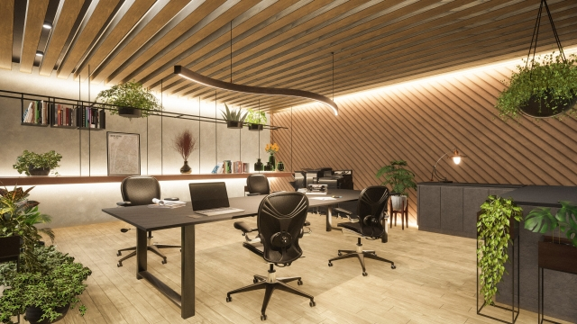

Inkscape、Illustrator、Photoshopを使用してデザイン作成し、
3年間ほど基礎を学びました。
視覚的に楽しく、読み手の目を引く設計です。
今後はIllustrator、Photoshopを中心に、WEBデザインに経験を最
大限に活かしていきたいと考えています。


Inkscape、Illustrator、Photoshopを使用してデザイン作成し、
3年間ほど基礎を学びました。
視覚的に楽しく、読み手の目を引く設計です。
今後はIllustrator、Photoshopを中心に、WEBデザインに経験を最
大限に活かしていきたいと考えています。


インクスケープを活用して制作されたLINEスタンプは、独自の魅力が詰まったクリエイティブな作品です！例えば、秋田柴犬雑種やポメラニアンなど、犬種ごとの個性豊かなデザインがスタンプとしてラインアップされています。これらのスタンプは、日常会話をさらに楽しくするためのアイテムとして人気を集めています。スタンプの特徴としては、表情豊かなキャラクターと細部まで丁寧に描かれたデザインが挙げられます。インクスケープというベクターグラフィックソフトを使用して制作されているため、イラストがシャープで高品質。視覚的にもインパクトがあり、使うたびに笑顔を届けてくれると思います。「秋田柴犬雑種Lineスタンプ」「ポメラニアンLineスタンプ」など、友達や家族との会話を盛り上げるユーモラスな表現が含まれており、リラックスした雰囲気を楽しむことができます。LINEストアにて購入可能で、使い勝手抜群です。特に犬好きの方にはぴったりな作品に仕上げました。


インクスケープを利用して作成されたパンフレットやチラシは、クリエイティブな視点と実用性が融合した作品です。特にデザインの柔軟性と高い表現力を持つこのソフトウェアは、プロのグラフィックデザイナーから趣味での利用者まで幅広く活用されています。インクスケープでのデザインの特徴として、ベクター形式での編集:インクスケープは、ベクターデータを扱うため、デザインを高解像度で保存可能です。拡大縮小しても画質が劣化しないので、パンフレットやチラシには最適です。カスタムフォントやスタイル:フォントの種類やサイズ、文字間隔など細かい調整が簡単で、特にタイトルやキャッチコピーにインパクトを与えることができます。画像やグラフィックの挿入写真やイラストを簡単に組み込むことができ、視覚的に豊かな表現が可能。背景デザインやアイコンを駆使して読み手の注意を引く工夫ができます。レイヤー機能:レイヤーを利用することで、複数の要素を整理しながらデザインを進められます。例えば、背景、テキスト、画像を別々に管理することで効率的な編集が可能です。パンフレットやチラシ制作においては、企業案内や商品プロモーション:例えば、新商品を紹介するチラシでは、商品の特長を色鮮やかなグラフィックとともに強調するデザインを作成。イベント案内:研修医交流会の案内チラシなど、日時や場所を視覚的に分かりやすく配置。サービス情報:パーソナルジムの案内では、適切なレイアウトと写真を活用して、読み手に具体的なイメージを提供。これまで手がけた作品はどれも、チラシデザインを細かいディテールで仕上げることで高い視認性と集客効果を実現しています。